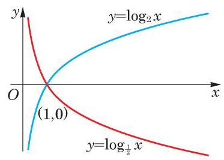
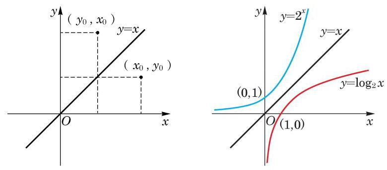

例题 1
例 1 求下列函数的定义域:
(1) ；
(2) (常数 且 .
学生阅读版 / 沪教版高中数学
必修第一册
第4章幂函数、指数函数与对数函数 · 保留教材主线与原题
教材与正式教参整合
我们已经学过幂函数及指数函数. 本节我们将利用对数来引入对数函数.
前面我们已经知道什么是正数 以 为底的对数 , 其中 且 .
现在，将对数的底数 固定，而将真数 用变量 代替， 以研究对数的值 随 变化而变化的规律. 用
来描述 与 的关系就是对数函数.
定义 当底数 固定,且 时, 以 为底的对数
因为只有当 时, 才有意义,所以对数函数的定义域是全体正数.
例 1 求下列函数的定义域:
(1) ；
(2) (常数 且 .
例 2 分别作出对数函数 及 的大致图像.
例 3 作出对数函数 的大致图像.
(1) ； (2) (常数 且 ).
由上述,对数函数的图像可分为两种情况:
(1) 的情况. 此时，对数函数 的图像类似图 4-3-1中 的图像. 当 时,函数值大于零,其图像在 轴的上方; 而当 时,函数值小于零,其图像在 轴的下方.
(2) 的情况. 此时，对数函数图像类似图 4-3-2 中 的图像. 当 时,函数值小于零,其图像在 轴的下方; 当 时,函数值大于零,其图像在 轴的上方.
这两种情况下的图像可见图 4-3-3 中两个对数函数 与 的图像. 它们看上去关于 轴对称,实际上也的确如此. 事实上, 由换底公式
可得,在 时,底 小于 1 的对数函数 与底 大于 1 的对数函数 恰相差一个符号,它们的图像关于 轴对称.

图 4-3-3
因为 或者 ,所有指数函数 的图像均经过点 ,而所有对数函数 的图像均经过点 , 所以我们有如下的性质:
对数函数的图像总是经过点 .
因为 是 的解,所以说对数运算是指数运算的一种逆运算. 作为函数,称对数函数 是指数函数 的反函数.
指数函数 的图像与其反函数即对数函数 的图像之间有什么关系呢? 它们的关系是: 对数函数 的
函数 的图像与 的图像关于 轴对称.
反函数的概念将在下一章学习.
图像与指数函数 的图像关于直线 是对称的. 这就是说,对数函数 的图像关于直线 对称的图像就是指数函数 的图像. 事实上,若点 在对数函数 的图像上,就有 ,即 . 而点 关于直线 的对称点就是 ,由于 , 因此 必落在指数函数 的图像上. 反之亦然. 如图 4-3-4所示.

图 4-3-4
观察图 4-3-1 中的两个对数函数图像, 它们的底都大于 1, 且都是递增的,即在自变量 增大时,函数值 也增大. 这点在理论上也可以证明. 为此, 先证明下面的定理.
定理 当 时, .
证明 用反证法证明. 如果 ,由指数函数的性质,就可得 ,与 矛盾.
对数函数的单调性 当 时,对数函数 在区间 上是严格增函数; 当 时,对数函数 在区间 上是严格减函数.
证明 当 时,如果 ,那么 ,由上面的定理可得
即 . 这说明对数函数 在区间 上是严格增函数,即 随着 的 (严格) 增大而 (严格) 增大.
当 时的结论,其证明留作课后练习.
关于对数函数 的图像与性质的总结见表 4-2.
指数函数 的图像与其反函数对数函数 的图像关于直线 对称.
点 关于直线 的对称点是 ,将在下一章证明.
表 4-2
| 图像 | <img src="https://cdn.noedgeai.com/bo_d4slocn7aajc73fspklg_18.jpg?x=323&y=343&w=357&h=264&r=0"/> | <img src="https://cdn.noedgeai.com/bo_d4slocn7aajc73fspklg_18.jpg?x=721&y=342&w=352&h=270&r=0"/> |
| 图像特征 | (1)图像都在 轴右侧，无限趋近于 轴,但永不相交. | |
| (2)过点 . | ||
| (3)由左至右图像上升. | (3)由左至右图像下降. | |
| 函数性质 | (1)定义域为 . | |
| (2)当 时， . | ||
| (3) 在区间 上是严格增函数. | (3)在区间 上是严格减函数. | |
例 4 利用对数函数的单调性, 比较下列各题中两个对数的大小.
(1)log 与 ;
(2) 与 ；
(3) 与 .
例 5 比较 与 的大小.
(1)lo 和lo ；
(2)lo 和lo .
例 6 试利用对数函数单调性来估算对数 的第一位小数的值.
例 7 如果不考虑空气阻力,火箭的最大速度 (单位: )和燃料的质量 (单位: )、火箭 (除燃料外) 的质量 (单位: )之间的关系是
这里 表示以 为底的自然对数. 问当燃料质量至少是火箭质量的多少倍时,火箭的最大速度才能超过 . (结果精确到 0.1 倍)
例 8 现在我们可以回答必修课程 3.2 节一开始提出的问题: 在年利率为 5%，且按年计复利的条件下，1 万元钱存多少年会超过5 万元?
(1)写出 的含量 随时间 变化的函数表达式；
(2)问至少经过多少年， 的含量才能低于原来的 90%.
(1) (常数 且 )；
(2) .
(1) ； (2) ；
(3) .
(1) ; (2) .
① ; ② ; ③ ; ④ .
(1) ；
(2) ；
(3) .
(1)计算函数 和 当 ， ， ， ， 时的值，并由此比较两个函数的增长速度.
(2)计算函数 和 当 ， ， ， ， 时的值，并由此比较两个函数的增长速度.
(3)计算函数 和 当 ， ， ， ， 时的值，并由此比较两个函数的增长速度.
通过上述比较, 你对对数函数的增长速度有何体会?